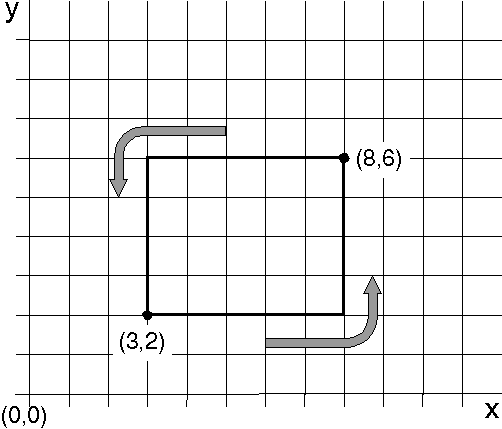
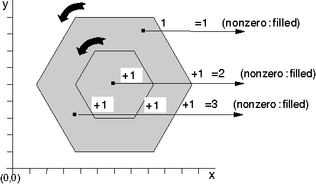

In winding mode, the direction in which the boundary lines in the area are drawn determines whether a given point is included in the filled area. The direction of a line depends on both the graphics functions used to draw it and the world coordinates that define it. For example, if the current position of a presentation space is (c,c), and GpiBox is called with the diagonally-opposite corner of the box specified as (d,d), GpiBox always draws the box in the following order:
As illustrated in the following figure, in some cases the box is drawn in a counterclockwise direction. When either xd. is less than xc., or yd. is less than yc., but not both, a box is drawn clockwise.

The Box
The current position is (3,2) and the specified corner is at (8,6). The box is drawn from (3,2) to (8,2) to (8,6) to (3,8) to (3,2).
For the polyline primitive, the direction in which a line is drawn depends on the relative values of the end points of each line, so you can choose whether to draw in a clockwise or counterclockwise direction.
To determine if a given point is included in the filled area, count the number of lines to be crossed to move from that point to infinity. For each boundary line drawn in one direction, add one to the tally. For each line drawn in the opposite direction, subtract one from the tally. A point is within the area if the result is nonzero.
If two figures -for example, the hexagons in the following figure- are drawn in different directions, the tally for the inner hexagon is 0 and the area will look exactly as it does in alternate mode.
Area Constructed in Different Directions in Winding Mode
If the two hexagons are drawn in the same direction, the result is 2, and the inner hexagon is shaded as shown in the following figure.

Area Constructed in the Same Direction in Winding Mode
The boundary lines of the area in the previous figure have been drawn and are visible through the area-fill pattern. The boundary lines of an area primitive do not have to be drawn; but if they are, they are drawn according to the current line attributes.
To vary the appearance of different parts of the boundary line, you can change the current line attributes during area definition.
The boundary lines of an area are considered a part of the area's interior. Therefore, when you draw an area without boundary lines (BA_NOBOUNDARY), the area-fill pattern extends to include the boundaries of the area, and the area is the same size it would be if the boundary lines had been drawn.